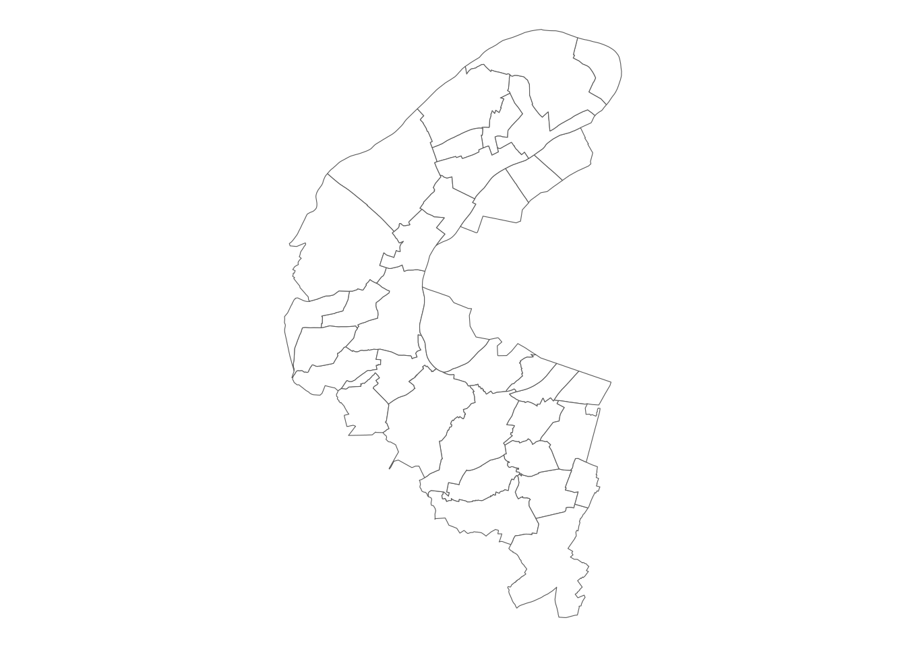
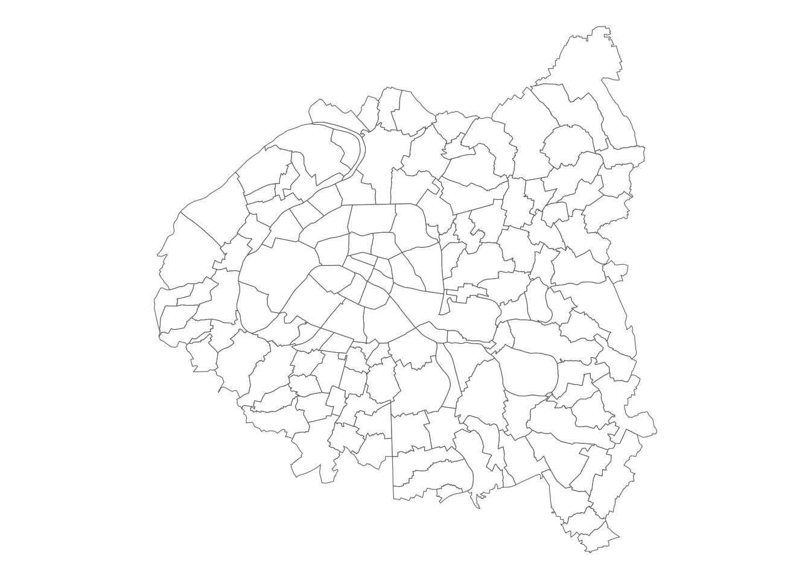
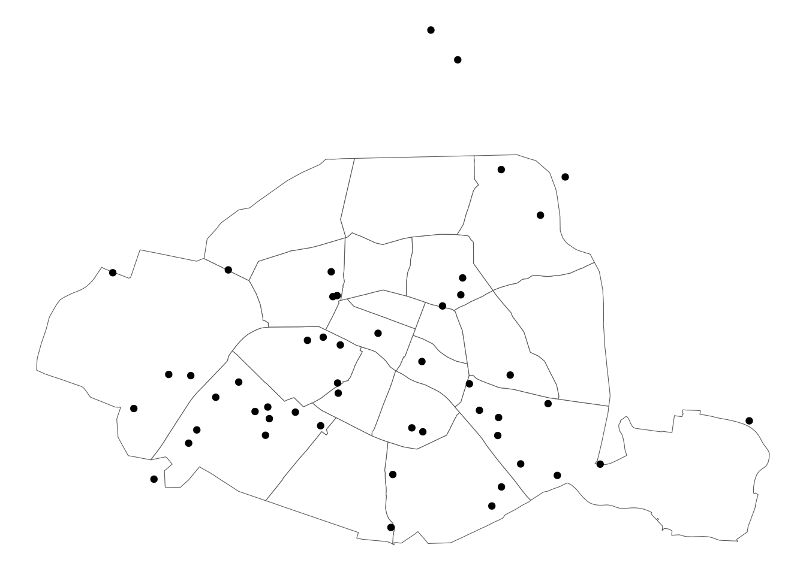
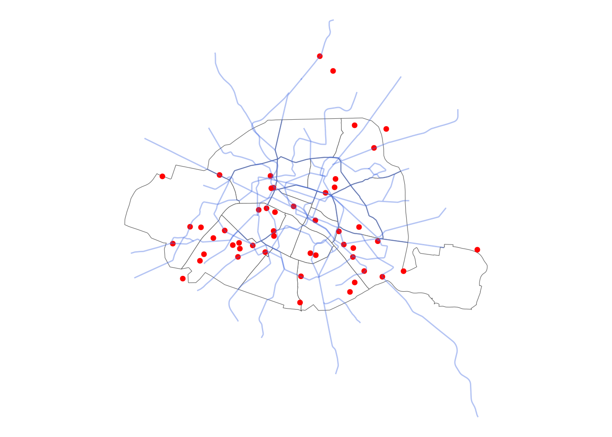

library(units)
library(dplyr)
library(sf)
library(ggplot2)
library(leaflet)
library(cartiflette)Manipuler des données spatiales avec sf
Dérouler les slides ci-dessous ou cliquer ici pour afficher les slides en plein écran.
Dans ce troisième TP, nous allons apprendre à importer et manipuler des données spatiales avec . Ce logiciel propose des fonctionnalités très intéressantes pour ce type de données complexes qui le rendent capable de se comporter comme un SIG. Grâce à la librairie sf, une extension de dplyr aux données spatiales, les données géographiques pourront être manipulées comme n’importe quel type de données avec . La complexité induite par la dimension spatiale ne sera pas ressentie.
Si vous êtes intéressés par Python , une version très proche de ce TP est disponible dans mon cours de l’ENSAE.
Dans ce chapitre, nous allons utiliser les packages suivants:
Note
Certains exemples de code présentent des annotations sur le côté, passez votre souris dessus pour les afficher, comme ci-dessous
"une annotation explicative m'accompagne à droite"- 1
- Je m’affiche quand on passe la souris sur moi 🐭 !
1 Lire et enrichir des données spatiales
Dans cette partie, nous utiliserons les fonds de carte de l’IGN dont la mise à disposition est facilitée par le projet cartiflette1.
Exercice 1: lire et explorer la structure de fichiers géographiques
- S’inspirer des exemples de code présents dans les slides mobilisant le package
cartiflettepour télécharger les données communales des départements 75, 92, 93 et 94. Vous pouvez nommer l’objetcommunes_borders - Regarder les premières lignes des données. Identifier la différence avec un DataFrame standard.
- Afficher le
crsdecommunes_borders. Ce dernier contrôle la transformation de l’espace tridimensionnel terrestre en une surface plane. Utiliserst_transformpour transformer les données en Lambert 93, le système officiel (code EPSG 2154). - Afficher les communes des Hauts de Seine (département 92) et représenter rapidement la carte.
- Réprésenter la carte de Paris : quel est le problème ?
Si vous désirez observer l’aspect de la carte du 92 (question 4), déroulez cette partie.

En ce qui concerne Paris, à l’issue de la question 5, la carte aura l’aspect suivant:

On remarque rapidement le problème. On ne dispose ainsi pas des limites des arrondissements parisiens, ce qui appauvrit grandement la carte de Paris.
On pourrait les récupérer directement depuis le site d’open-data du Grand Paris mais on propose ici d’utiliser à nouveau cartiflette afin de disposer du fonds de carte officiel des arrondissements.
Exercice 2: compléter des données spatiales issues de sources différentes
- Importer les données de découpage des arrondissements parisiens à l’adresse à l’aide de
cartiflette. - Vérifier sur une carte que les découpages des arrondissements sont bien présents.
- Vérifier l’attribut
crs. Est-il cohérent avec celui des données communales ? Si non, transformer en Lambert 93 (code EPSG 2154). - Retirer Paris du jeu de données communales et utiliser les arrondissements pour enrichir (nommer l’objet obtenu
data_borders). - Représenter à nouveau les communes de la petite couronne parisienne (75, 92, 93, 94)
Reading layer `raw' from data source
`https://minio.lab.sspcloud.fr/projet-cartiflette/diffusion/shapefiles-test2/year=2022/administrative_level=ARRONDISSEMENT_MUNICIPAL/crs=4326/DEPARTEMENT=75/vectorfile_format=geojson/provider=IGN/source=EXPRESS-COG-CARTO-TERRITOIRE/raw.geojson'
using driver `GeoJSON'
Simple feature collection with 20 features and 8 fields
Geometry type: POLYGON
Dimension: XY
Bounding box: xmin: 2.224217 ymin: 48.81556 xmax: 2.469851 ymax: 48.90215
Geodetic CRS: WGS 84Simple feature collection with 20 features and 8 fields
Geometry type: POLYGON
Dimension: XY
Bounding box: xmin: 2.224217 ymin: 48.81556 xmax: 2.469851 ymax: 48.90215
Geodetic CRS: WGS 84
First 10 features:
ID NOM NOM_M
1 ARR_MUNI0000000009736045 Paris 3e Arrondissement PARIS 3E ARRONDISSEMENT
2 ARR_MUNI0000000009736046 Paris 2e Arrondissement PARIS 2E ARRONDISSEMENT
3 ARR_MUNI0000000009736545 Paris 4e Arrondissement PARIS 4E ARRONDISSEMENT
4 ARR_MUNI0000000009736544 Paris 5e Arrondissement PARIS 5E ARRONDISSEMENT
5 ARR_MUNI0000000009736543 Paris 6e Arrondissement PARIS 6E ARRONDISSEMENT
6 ARR_MUNI0000000009736043 Paris 9e Arrondissement PARIS 9E ARRONDISSEMENT
7 ARR_MUNI0000000009736042 Paris 10e Arrondissement PARIS 10E ARRONDISSEMENT
8 ARR_MUNI0000000009736035 Paris 11e Arrondissement PARIS 11E ARRONDISSEMENT
9 ARR_MUNI0000000009736531 Paris 13e Arrondissement PARIS 13E ARRONDISSEMENT
10 ARR_MUNI0000000009736044 Paris 8e Arrondissement PARIS 8E ARRONDISSEMENT
INSEE_ARM INSEE_COM POPULATION INSEE_DEP source
1 75103 75056 34025 75 IGN:EXPRESS-COG-CARTO-TERRITOIRE
2 75102 75056 21595 75 IGN:EXPRESS-COG-CARTO-TERRITOIRE
3 75104 75056 29131 75 IGN:EXPRESS-COG-CARTO-TERRITOIRE
4 75105 75056 58227 75 IGN:EXPRESS-COG-CARTO-TERRITOIRE
5 75106 75056 40303 75 IGN:EXPRESS-COG-CARTO-TERRITOIRE
6 75109 75056 60026 75 IGN:EXPRESS-COG-CARTO-TERRITOIRE
7 75110 75056 86472 75 IGN:EXPRESS-COG-CARTO-TERRITOIRE
8 75111 75056 145208 75 IGN:EXPRESS-COG-CARTO-TERRITOIRE
9 75113 75056 180005 75 IGN:EXPRESS-COG-CARTO-TERRITOIRE
10 75108 75056 35655 75 IGN:EXPRESS-COG-CARTO-TERRITOIRE
geometry
1 POLYGON ((2.350164 48.86199...
2 POLYGON ((2.347918 48.87069...
3 POLYGON ((2.368491 48.85581...
4 POLYGON ((2.336657 48.83967...
5 POLYGON ((2.332916 48.85934...
6 POLYGON ((2.325888 48.86958...
7 POLYGON ((2.364714 48.88437...
8 POLYGON ((2.376905 48.87205...
9 POLYGON ((2.364204 48.8164,...
10 POLYGON ((2.327165 48.88346...
La carte de Paris intra-muros est, après la récupération des arrondissements avec cartiflette de ce type là:

2 Utiliser des données géographiques comme des couches graphiques
Souvent, le découpage communal ne sert qu’en fond de cartes, pour donner des repères. En complément de celui-ci, on peut désirer exploiter un autre jeu de données.
On va partir des données de localisation des stations velib, disponibles sur le site d’open data de la ville de Paris et requêtables directement par l’url https://opendata.paris.fr/explore/dataset/velib-emplacement-des-stations/download/?format=geojson&timezone=Europe/Berlin&lang=fr
Exercice 3: importer et explorer les données velib
- Importer les données velib sous le nom
station - Vérifier la projection géographique de
station(attributcrs). Si celle-ci est différente des données communales, reprojeter ces dernières dans le même système de projection que les stations de vélib - Représenter sur une carte les 50 stations les plus importantes (variable
capacity). Vous pouvez également afficher le fonds de carte des arrondissements de Paris. Cette page peut vous aider pour comprendre comment afficher plusieurs couches à la fois. Vous pouvez customiser la carte en retirant les axes grâce à la méthodeset_axis_offet mettre un titre tel que “Les 50 principales stations de Vélib” avec la méthodeset_title. - Afficher également (trait bleu et épais) les réseaux de transport en communs, disponibles ici. L’url à requêter est https://data.iledefrance-mobilites.fr/explore/dataset/traces-du-reseau-ferre-idf/download/?format=geojson&timezone=Europe/Berlin&lang=fr
Simple feature collection with 6 features and 4 fields
Geometry type: POINT
Dimension: XY
Bounding box: xmin: 2.254911 ymin: 48.84097 xmax: 2.379057 ymax: 48.89792
Geodetic CRS: WGS 84
capacity name stationcode coordonnees_geo
1 42 Porte de Saint-Ouen - Bessières 17044 48.897922, 2.328515
2 44 Ramponeau - Belleville 20143 48.871031, 2.379057
3 30 Saint-Cloud - Hippodrome 16138 48.857721, 2.254911
4 23 Porte Pouchet-Bessières 17008 48.897877, 2.323063
5 49 Gare du Nord - Hôpital Lariboisière 10107 48.881949, 2.352339
6 49 Exelmans - Versailles 16039 48.84097, 2.26439
geometry
1 POINT (2.328515 48.89792)
2 POINT (2.379057 48.87103)
3 POINT (2.254911 48.85772)
4 POINT (2.323063 48.89788)
5 POINT (2.352339 48.88195)
6 POINT (2.26439 48.84097)Coordinate Reference System:
User input: WGS 84
wkt:
GEOGCRS["WGS 84",
DATUM["World Geodetic System 1984",
ELLIPSOID["WGS 84",6378137,298.257223563,
LENGTHUNIT["metre",1]]],
PRIMEM["Greenwich",0,
ANGLEUNIT["degree",0.0174532925199433]],
CS[ellipsoidal,2],
AXIS["geodetic latitude (Lat)",north,
ORDER[1],
ANGLEUNIT["degree",0.0174532925199433]],
AXIS["geodetic longitude (Lon)",east,
ORDER[2],
ANGLEUNIT["degree",0.0174532925199433]],
ID["EPSG",4326]]La carte attendu à l’issue de la question 3 a l’aspect suivant:

Reading layer `OGRGeoJSON' from data source
`https://data.iledefrance-mobilites.fr/explore/dataset/traces-du-reseau-ferre-idf/download/?format=geojson&timezone=Europe/Berlin&lang=fr'
using driver `GeoJSON'
Simple feature collection with 1638 features and 21 fields
Geometry type: LINESTRING
Dimension: XY
Bounding box: xmin: 1.149741 ymin: 47.95678 xmax: 3.512889 ymax: 49.4262
Geodetic CRS: WGS 84L’ajout du réseau de métro permet d’obtenir une carte ressemblant à celle-ci:

Pour faire une belle carte, il faudrait couper les lignes de métro via une jointure spatiale ou privilégier un fonds de carte conceptuel. La méthode pour faire des cartes contextuelles est proposée en exercice supplémentaire 👇️. puisqu’elle implique des connaissances minimales avec leaflet que nous verrons ultérieurement.
3 Jointures spatiales
Les jointures attributaires fonctionnent comme avec un tibble classique. Pour conserver un objet spatial in fine, il faut faire attention à utiliser en premier (base de gauche) l’objet sf. En revanche, l’un des intérêts des objets geopandas est qu’on peut également faire une jointure sur la dimension spatiale grâce à plusieurs fonctions:
| Fonction | Opération |
|---|---|
st_intersects() |
Quelles géométries de x intersectent celles de y ? |
st_contains() |
Quelles géométries de x contiennent celles de y ? |
st_disjoint() |
Quelles géométries de x sont disjointes à celles de y ? |
st_is_within_distance() |
Quelles géométries de x est à moins de |
| m/km de celles de y ? |
La documentation à laquelle se référer est ici. Une version pédagogique se trouve dans la documentation utilitR.
Exercice 4: Associer les stations aux communes et arrondissements auxquels elles appartiennent
- Faire une jointure spatiale pour enrichir les données de stations en y ajoutant des informations de
data_paris. Appeler cet objetstations_info - Représenter la carte des stations du 19e arrondissement (s’aider de la variable
NOM). Vous pouvez mettre en fond de carte les arrondissements parisiens. - Compter le nombre de stations velib et le nombre de places velib par arrondissement ou commune (pour vous aider, vous pouvez compléter vos connaissances avec ce tutoriel). Représenter sur une carte chacune des informations
- Représenter les mêmes informations mais en densité (diviser par la surface de l’arrondissement ou commune en km2)
- (optionnel) Choisir une des cartes de densité et la nettoyer (retirer les axes, mettre les titres…)
Pour la question 2, la première méthode consiste à afficher toute la ville mais à ne représenter que les points des stations du 19e:
Joining with `by = join_by(ID, NOM, NOM_M, INSEE_COM, STATUT, POPULATION,
INSEE_CAN, INSEE_ARR, INSEE_DEP, INSEE_REG, SIREN_EPCI, source, INSEE_ARM)`Enfin, dans la question 4, si on représente plutôt la capacité sous forme de densité, pour tenir compte de la taille différente des arrondissements, on obtient cette carte:
Simple feature collection with 1531 features and 21 fields
Geometry type: POLYGON
Dimension: XY
Bounding box: xmin: 637298.9 ymin: 6843146 xmax: 671750.3 ymax: 6879246
Projected CRS: RGF93 / Lambert-93
First 10 features:
ID NOM NOM_M INSEE_COM
1 COMMUNE_0000000009736037 Levallois-Perret LEVALLOIS-PERRET 92044
2 COMMUNE_0000000009736037 Levallois-Perret LEVALLOIS-PERRET 92044
3 COMMUNE_0000000009736037 Levallois-Perret LEVALLOIS-PERRET 92044
4 COMMUNE_0000000009736037 Levallois-Perret LEVALLOIS-PERRET 92044
5 COMMUNE_0000000009736037 Levallois-Perret LEVALLOIS-PERRET 92044
6 COMMUNE_0000000009736037 Levallois-Perret LEVALLOIS-PERRET 92044
7 COMMUNE_0000000009736037 Levallois-Perret LEVALLOIS-PERRET 92044
8 COMMUNE_0000000009736037 Levallois-Perret LEVALLOIS-PERRET 92044
9 COMMUNE_0000000009736037 Levallois-Perret LEVALLOIS-PERRET 92044
10 COMMUNE_0000000009736037 Levallois-Perret LEVALLOIS-PERRET 92044
STATUT POPULATION INSEE_CAN INSEE_ARR INSEE_DEP INSEE_REG
1 Commune simple 66082 16 2 92 11
2 Commune simple 66082 16 2 92 11
3 Commune simple 66082 16 2 92 11
4 Commune simple 66082 16 2 92 11
5 Commune simple 66082 16 2 92 11
6 Commune simple 66082 16 2 92 11
7 Commune simple 66082 16 2 92 11
8 Commune simple 66082 16 2 92 11
9 Commune simple 66082 16 2 92 11
10 Commune simple 66082 16 2 92 11
SIREN_EPCI source INSEE_ARM
1 200054781/200057982 IGN:EXPRESS-COG-CARTO-TERRITOIRE <NA>
2 200054781/200057982 IGN:EXPRESS-COG-CARTO-TERRITOIRE <NA>
3 200054781/200057982 IGN:EXPRESS-COG-CARTO-TERRITOIRE <NA>
4 200054781/200057982 IGN:EXPRESS-COG-CARTO-TERRITOIRE <NA>
5 200054781/200057982 IGN:EXPRESS-COG-CARTO-TERRITOIRE <NA>
6 200054781/200057982 IGN:EXPRESS-COG-CARTO-TERRITOIRE <NA>
7 200054781/200057982 IGN:EXPRESS-COG-CARTO-TERRITOIRE <NA>
8 200054781/200057982 IGN:EXPRESS-COG-CARTO-TERRITOIRE <NA>
9 200054781/200057982 IGN:EXPRESS-COG-CARTO-TERRITOIRE <NA>
10 200054781/200057982 IGN:EXPRESS-COG-CARTO-TERRITOIRE <NA>
area capacity name stationcode
1 2.417473 [km^2] 39 Paul Vaillant Couturier - Chaptal 23001
2 2.417473 [km^2] 25 Jules Guesde - Alsace 23006
3 2.417473 [km^2] 36 Paul Vaillant-Couturier - Victor Hugo 23004
4 2.417473 [km^2] 0 Bineau - Louise Michel 23011
5 2.417473 [km^2] 50 Pont de Levallois-bécon 23002
6 2.417473 [km^2] 26 Hôtel de Ville de Levallois Perret 23008
7 2.417473 [km^2] 50 Anatole France - Louise Michel 23009
8 2.417473 [km^2] 27 Voltaire - Anatole France 23010
9 2.417473 [km^2] 26 Gare de Clichy-Levallois 23005
10 2.417473 [km^2] 28 Président Wilson - Baudin 23003
coordonnees_geo stationcode_count capacity_sum
1 48.893480, 2.277525 11 334
2 48.890566, 2.295078 11 334
3 48.898197, 2.293848 11 334
4 48.886662, 2.284327 11 334
5 48.898418, 2.279131 11 334
6 48.893145, 2.288882 11 334
7 48.888732, 2.288158 11 334
8 48.891999, 2.284263 11 334
9 48.896798, 2.298468 11 334
10 48.898269, 2.284934 11 334
geometry capacity_density
1 POLYGON ((647761.4 6867307,... 16.13255 [1/km^2]
2 POLYGON ((647761.4 6867307,... 10.34138 [1/km^2]
3 POLYGON ((647761.4 6867307,... 14.89158 [1/km^2]
4 POLYGON ((647761.4 6867307,... 0.00000 [1/km^2]
5 POLYGON ((647761.4 6867307,... 20.68275 [1/km^2]
6 POLYGON ((647761.4 6867307,... 10.75503 [1/km^2]
7 POLYGON ((647761.4 6867307,... 20.68275 [1/km^2]
8 POLYGON ((647761.4 6867307,... 11.16869 [1/km^2]
9 POLYGON ((647761.4 6867307,... 10.75503 [1/km^2]
10 POLYGON ((647761.4 6867307,... 11.58234 [1/km^2]4 Exercices supplémentaires
Footnotes
La librairie est expérimentale mais les prochaines semaines devraient permettre de combler ce manque. Une documentation interactive illustrant le code nécessaire pour reproduire telle ou telle carte est disponible sur linogaliana.github.io/cartiflette-website.↩︎